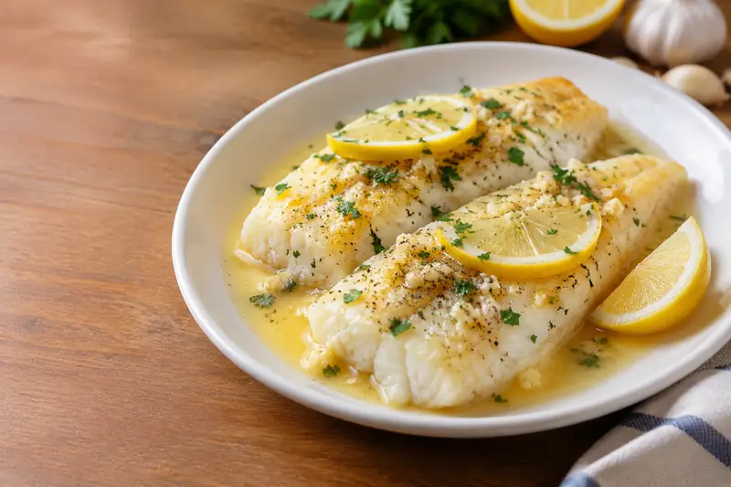

Main主菜 · Western西式
Lemon Butter Baked Cod柠檬黄油烤鳕鱼
The everyday baked fish of North American kitchens; a thawed Costco cod fillet is on the table in under twenty minutes. Only one thing matters here, which is not overbaking. Cod that goes too far weeps water and turns dry and crumbly, so take it out the moment it flakes.北美家庭最常见的烤鱼，Costco 冷冻鳕鱼柳解冻后十几分钟就能上桌。整道菜只有一个关键：别烤过头。鳕鱼肉一旦过火就会出水、变得松散发柴，烤到刚好能用叉子拨开就要拿出来。

Ingredients食材
- Cod fillet鳕鱼排 400 g · 2 cod fillets (about 400 g total)鳕鱼柳 2 块（共约 400 克） thaw frozen fillets in the fridge overnight冷冻的提前一晚放冷藏解冻
- Butter黄油 28 g · 2 tbsp, melted2 汤匙，熔化
- Extra virgin olive oil橄榄油 7 g · 1/2 tbsp, for the dish1/2 汤匙，刷烤盘
- Garlic大蒜 9 g · 3 cloves, minced3 瓣，切末
- Lemons柠檬 100 g · 1 lemon: zested and juiced, a few slices kept back1 个：擦皮屑、挤汁，留几片装饰
- Salt盐 2 g · about 1/3 tsp约 1/3 茶匙
- Black pepper黑胡椒 1 g · a few grinds少许
- Fresh parsley欧芹 5 g · a small handful, chopped一小把，切碎
Weights are as bought, before trimming or peeling. Costco pack sizes and availability vary; see each ingredient page.重量为买回来的原重（去皮去骨之前）。Costco 规格与有无随时变化，点食材名看详情。
Method做法
- Heat the oven to 200°C (400°F).烤箱预热到 200°C（400°F）。
- Pat the cod dry on both sides with paper towel.鳕鱼用厨房纸把两面的水吸干。
- Oil a baking dish, lay in the fish and season both sides with salt and pepper.烤盘刷一层橄榄油，放入鱼块，两面撒盐和黑胡椒。
- Stir the garlic, lemon zest and 1 tbsp lemon juice into the melted butter.熔化的黄油里拌入蒜末、柠檬皮屑和 1 汤匙柠檬汁。
- Spoon the lemon butter over the fish and lay a couple of lemon slices alongside.把柠檬黄油均匀浇在鱼上，旁边摆两片柠檬。
- Bake 10-14 minutes, until the centre is opaque and flakes when pushed with a fork (70°C inside).烤 10–14 分钟，到鱼肉中心变白、用叉子一拨就能分开（中心温度 70°C）。
- Baste with the butter from the dish and scatter the parsley.出炉后舀盘里的黄油汁再浇一遍，撒欧芹。
Keys to success成功要点
- Time it by thickness, about 10 minutes per 2.5 cm (1 inch); fold the thin tail end under so it does not overcook.烤的时间看厚度：大约每 2.5 厘米（1 英寸）厚烤 10 分钟，薄的尾段先熟，可以折起来塞在下面。
- Drying the fish keeps the dish from flooding and lets the butter cling.鱼身擦干才不会烤出一盘水，黄油也才挂得住。
- Put only a little juice in the butter and squeeze the rest at the table; it tastes fresher and the acid does not turn the surface chalky.柠檬汁只放一点进黄油，其余出炉后再挤，酸味更清新，鱼肉也不会被酸「煮」白。
Common problems常见失败与补救
- The dish is full of liquid烤盘里全是水
The fish was not fully thawed or dried. Next time thaw completely and press dry; for now pour off the liquid and baste again.冷冻鱼没解冻透或没擦干。下次完全解冻、厨房纸压干；这次把汁倒掉，黄油重新浇一遍。 - The fish is dry and falls apart鱼肉发柴、一夹就碎
It was overbaked. Check 3 minutes earlier next time and pull it as soon as it flakes; carry-over heat finishes the centre.烤过了。下次提前 3 分钟检查，刚能拨开就出炉，余温会把中心带熟。 - It tastes flat味道淡
Cod is mild; salt the fish itself, not just the butter, and finish with more lemon and a pinch of salt.鳕鱼本身清淡，盐要撒在鱼身上而不只是放进黄油；上桌前再挤柠檬、撒一点盐。
Watch it done视频参考
Titled lemon garlic butter cod, three minutes, over 220,000 views; the same approach as this page.标题就是柠檬蒜香黄油烤鳕鱼，3 分钟，播放二十多万，做法和本页一致。
A 20-minute baked cod from The Mediterranean Dish, six minutes, over 600,000 views.地中海风味的 20 分钟烤鳕鱼，6 分钟，播放六十多万，可以看鱼肉烤到什么程度出炉。
Videos load only when you tap them (youtube-nocookie). Creators are credited; we do not host their videos.点了才加载视频（youtube-nocookie）。署名原作者，本站不托管视频。
Nutrition营养
| Energy热量 | 311 kcal |
| Protein蛋白质 | 36.4 g |
| Fat脂肪 | 16.3 g |
| of which saturated其中饱和脂肪 | 8 g |
| Carbohydrate碳水化合物 | 4.2 g |
| Fibre膳食纤维 | 1 g |
| Sodium钠 | 588 mg |
Moderate sodium钠中等 Sodium tiers: under 345 mg lower, 345-689 mg moderate, 690 mg and above high (this site's tiers; 15% of the 2,300 mg daily reference = 345 mg).钠分档：低于 345 mg 较低，345–689 mg 中等，690 mg 及以上偏高（本站分档；345 mg ＝ 每日参考 2300 mg 的 15%）。
Computed from the Canadian Nutrient File (Health Canada) with the weights above; oil and sauces are counted in full. Real dishes differ.按加拿大营养素数据库和上面的重量计算；油和酱汁按全量计入，实际会略低。
Good to know适合 / 需注意
- About 36.4 g protein per serving, a protein-rich meal (adult reference intake roughly 50-60 g/day; needs vary).每份蛋白质约 36.4 g，属于蛋白质较高的一餐（成人每日参考量约 50–60 g，个体差异大）。
- About 311 kcal with 36.4 g protein per serving; a reference when you watch total energy.每份约 311 千卡且蛋白质 36.4 g，需要控制总热量时可作参考。
- About 588 mg sodium per serving (about 26% of the daily reference), moderate; keep the other meals light that day.每份钠约 588 mg（约 26% 每日参考），属中等；同一天其他餐尽量清淡。
- About 8 g saturated fat per serving (daily reference about 20 g), on the high side; use a leaner cut or remove skin.每份饱和脂肪约 8 g（每日参考约 20 g），偏高；可换瘦肉部位或去皮。
- Contains allergens: Fish, Milk.含过敏原：鱼、牛奶。
Cod is very lean and high in protein; most of the fat comes from the butter, which you can halve and make up with olive oil.鳕鱼脂肪很低、蛋白质足；主要脂肪来自黄油，想更清淡可减半，用橄榄油补足。